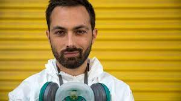

| Atila Iamarino |
5 de outubro de 1984 |
Atila Iamarino é um biólogo e pesquisador brasileiro, formado em microbiologia e doutor em
virologia, notório por seu trabalho de divulgação científica no canal do YouTube denominado
Nerdologia, que possui mais de 3 milhões de inscritos. Integra também o grupo Jovem Nerd, uma
plataforma digital de cultura pop, jogos eletrônicos e conteúdo jovem |
Atila Iamarino Wikipedia |
 |
| Derek Muller(Veritasium) |
9 de novembro de 1982 |
Derek Alexander Muller é um Austriaco-Canadense cientista, comunicador, cineasta, personalidade de
televisao e inventor, que é conhecido por seu canal no youtube Veritasium. Muller tem tambem uma
serie onde ele aparece como um correspondente na Netflix serie web Bill Nye Saves the World desde
2017 |
Derek Muller Wikipedia |
 |
| Sergio Sacani |
Desconhecido |
Fala sobre as noticias do mundo da Ciência e do Espaço |
Sergio Sacani Youtube
|
|